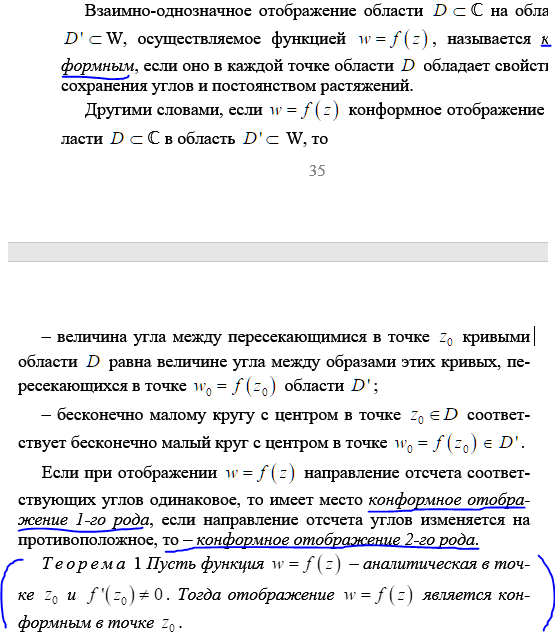
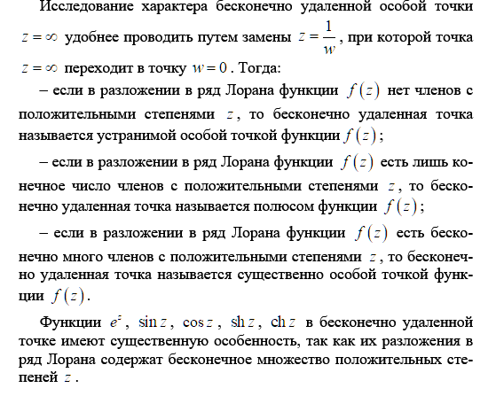
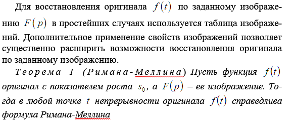
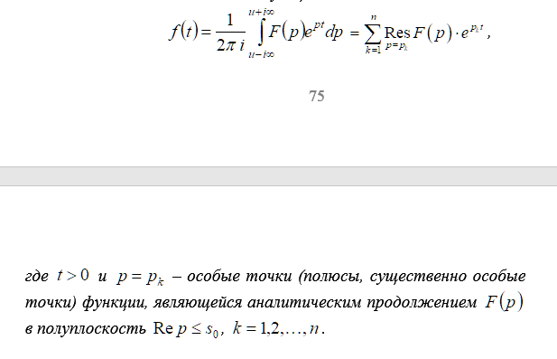

1. Множества, области, кривые.
2. Односвязные многосвязные области.
3. Последовательности комплексных чисел.
+ 4. Предел последовательности комплексных чисел.
5. Понятие функции комплексной переменной.
6. Предел и непрерывность функции комплексной переменной.
7. Основные элементарные функции комплексной переменной.
8. Определение производной.
9. Дифференцирование функции комплексной переменной.
10. Дифференциал.
11. Условия Коши-Римана.

12. Аналитическая функция.
13. Гармонические функции.

14. Сопряженно-гармонические функции.
15. Геометрический смысл модуля производной.
+ 16. Коэффициент подобия.
+ 17. Геометрический смысл аргумента производной.
18. Понятие о конформном отображении.
+ 19. Конформное отображение 1-го рода.
+ 20. Конформное отображение 2-го рода.

21. Критерий конформности.
22. Принцип взаимно-однозначного соответствия границ.
23. Принцип симметрии Римана-Шварца.
+ 24. Примеры функций, задающих конформное отображение.
25. Определение интеграла от функции комплексной переменной.
26. Связь интеграла комплексной переменной с криволинейным интегралом 2-го рода.
27. Свойства интегралов по комплексной переменной.
+ 28. Оценка интеграла от функции комплексной переменной.
29. Основная теорема Коши.
30. Теорема Коши для многосвязной области.
31. Первообразная и неопределенный интеграл.
32. Формула Ньютона-Лейбница.

33. Интеграл Коши.
34. Теорема о среднем для аналитических функций.
35. Принцип максимума модуля аналитической функции.
36. Интеграл типа Коши.
37. Теорема Коши-Лиувилля.

38. Теорема Морера.
39. Числовые ряды с комплексными членами. Частичная сумма ряда. Остаток ряда.
40. Необходимое условие сходимости.
41. Достаточное условие сходимости.
42. Функциональные ряды.
+ 43. Точка сходимости.
+ 44. Область сходимости.
45. Равномерная сходимость функциональных рядов.
46. Степенные ряды.
47. Круг и радиус сходимости степенного ряда.
48. Ряд Тейлора.
49. Разложение в ряд Тейлора некоторых элементарных функций комплексной переменной.
50. Формулы Эйлера.
51. Голоморфные функции.
+ 52. Нули аналитической функции.
53. Ряд Лорана.
54. Область сходимости ряда Лорана.
55. Разложение аналитической функции в ряд Лорана.
56. Классификация изолированных особых точек аналитической функции.
+ 57. Устранимая особая точка.
+ 58. Полюс.
+ 59. Порядок полюса.
+ 60. Существенно особая точка.
61. Теорема Сохотского.
62. Разложение аналитической функции в ряд Лорана в окрестно-сти бесконечно удаленной точки.

63. Понятие вычета.
64. Основная теорема о вычетах.
65. Вычисление вычетов для простого полюса.
+ 66. Вычисление вычетов для полюса порядка n.
67. Логарифмический вычет.
68. Вычет относительно бесконечно удаленной точки.
69. Теорема о сумме вычетов.
70. Вычисление интегралов по замкнутому контуру.
71. Вычисление с помощью вычетов определенных интегралов от рациональных функций действительной переменной.
72. Вычисление с помощью вычетов определенных интегралов от тригонометрических функций.
73. Вычисление с помощью вычетов несобственных интегралов от функций действительной переменной. Лемма Жордана.

74. Суммирование некоторых рядов с помощью вычетов.
75. Оригиналы и их свойства.
76. Преобразование Лапласа.
77. Свойства преобразования Лапласа.
78. Существование, непрерывность, единственность.
79. Свойства линейности, подобия, запаздывания, опережения.
Изображение периодической функции.
80. Затухание.
81. Дифференцирование оригинала и изображения.
82. Интегрирование оригинала.
83. Интегрирование изображения.
84. Таблица оригиналов и изображений.
85. Свертка функций.
+ 86. Умножение изображений.
+ 87. Интеграл Дюамеля.
88. Теоремы разложения.
+ 89. Обращение преобразования Лапласа.
+ 90. Формула Римана-Меллина.


91. Связь преобразования Лапласа с преобразованием Фурье.
+ 92. Формула обращения.